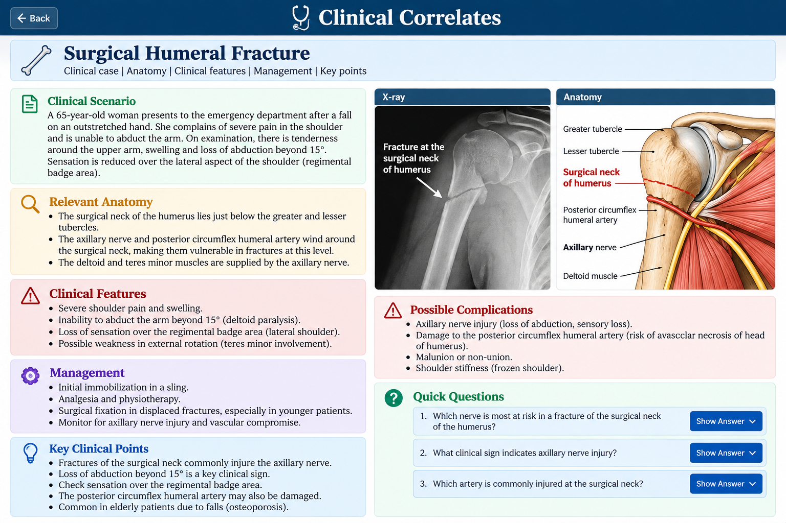

A 65-year-old woman falls onto her outstretched hand. She develops severe pain around the shoulder and upper arm with swelling and difficulty moving the arm.
On examination, active abduction is markedly impaired and sensation is reduced over the lateral aspect of the shoulder. The findings raise concern for a fracture through the surgical neck of the humerus with possible axillary nerve involvement.
🩻 Imaging

Educational AI-generated clinical/radiographic-style image. It is not a real patient's radiograph.
🦴 Anatomical Diagnosis
Likely diagnosis: fracture of the surgical neck of the humerus.
The surgical neck lies just distal to the greater and lesser tubercles. The axillary nerve and posterior circumflex humeral artery pass around the surgical neck in close relation to the humerus, making them clinically important structures in fractures at this level.
📚 Snell: proximal humerus, surgical neck, axillary nerve and posterior circumflex humeral artery. Exact page number should be checked against the exact Snell edition used; it is not invented here.
Why is the axillary nerve at risk?
The axillary nerve passes posteriorly around the surgical neck of the humerus.
It supplies the deltoid and teres minor muscles.
It carries sensation from the skin over the lateral shoulder, commonly described as the regimental badge area.
A displaced fracture can therefore produce weakness of abduction and sensory loss over the lateral shoulder.
⚠️ Important structures at risk
Axillary nerve: may be injured, causing deltoid weakness and sensory loss over the lateral shoulder.
Posterior circumflex humeral artery: travels with the axillary nerve around the surgical neck and may be damaged.
Anterior circumflex humeral artery: contributes to the blood supply of the proximal humerus and humeral head.
🩺 Clinical examination
Inspect for swelling, bruising and deformity around the shoulder.
Palpate for tenderness around the proximal humerus.
Assess active shoulder abduction and deltoid function.
Test sensation over the lateral shoulder/regimental badge area.
Assess distal pulses and perfusion.
Document neurovascular findings before and after treatment.
🚨 Complications
Axillary nerve injury with loss or weakness of deltoid function.
Sensory loss over the lateral shoulder.
Vascular injury involving vessels around the surgical neck.
Malunion, non-union or persistent shoulder stiffness.
In severe proximal humeral injuries, compromise of the blood supply to the humeral head may contribute to avascular necrosis.
💡 Key Learning Point
A fracture of the surgical neck of the humerus should immediately make you think of the axillary nerve and posterior circumflex humeral artery.
Loss of abduction together with reduced sensation over the lateral shoulder strongly suggests axillary nerve involvement.
🎯 Quick Clinical Questions
1. Which nerve is most closely associated with the surgical neck of the humerus?
Axillary nerve.
2. Which muscle is most important for abduction beyond the initial 15 degrees and may be weakened?
Deltoid.
3. Where would sensory loss from axillary nerve injury commonly be found?
Over the lateral aspect of the shoulder, the regimental badge area.
4. Which artery accompanies the axillary nerve around the surgical neck?
Posterior circumflex humeral artery.
📚 Source
Primary: Snell's Clinical Anatomy / Clinical Anatomy by Regions — proximal humerus, axillary nerve and circumflex humeral vessels.
Verification note: Exact page numbers are intentionally not fabricated. They should be verified against the exact edition being used.